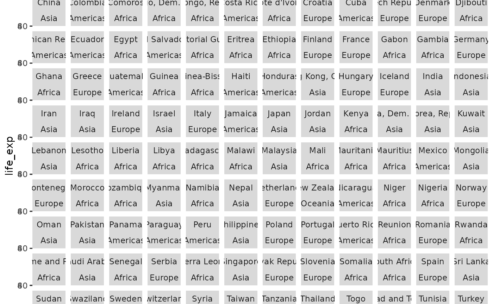

Trelliscope provides a simple mechanism to make a collection of visualizations and display them as interactive small multiples. This is a useful general visualization technique for many scenarios, particularly when looking at a somewhat large dataset comprised of many natural subsets. However, where Trelliscope differentiates itself from traditional faceting is in layout and interactivity. Traditionally, facets appear in one large plot that becomes overwhelming with too many groups. Trelliscope allows you to generate a large number of plots in an interactive window where the plots can be filtered and sorted based on metadata and paged through with a limited number of plots at a time.
The Trelliscope R package provides utilities to create the visualizations, specify metadata about the visualizations that can be used to interactively navigate them, and specify other aspects of how the viewer should behave.
Data frames of visualizations
The basic principle behind the design of the R package is that you specify a collection of visualizations as a data frame, with one or more columns representing the plots (either as a plot object such as ggplot or as a reference to an image such as a png, svg, or even html file), and the other columns representing metadata about each visualization.
We refer to each plot (row) of a given visualization (column) as a panel, and hence will often refer to a visualization column as a collection of panels.
This package provides utilities to help build these data frames and then explore them in an interactive viewer.
Pre-generated images
The simplest way to illustrate what is meant by a data frame of visualizations is to start with an example where the images have already been generated.
An example dataset that comes with the package contains images captured by the Mars rover Curiosity.
library(trelliscope)
mars_rover
#> # A tibble: 1,245 × 11
#> id camera sol earth_date class width height filesize hex hue img_src
#> <int> <chr> <int> <date> <chr> <int> <int> <int> <chr> <dbl> <chr>
#> 1 3560 Mars … 565 2014-03-09 hori… 192 144 5656 #7C6… 31.4 http:/…
#> 2 74689 Mars … 565 2014-03-09 hori… 1632 1200 592880 #7B6… 32.9 http:/…
#> 3 3558 Mars … 568 2014-03-12 wheel 192 144 9123 #3C3… 33.9 http:/…
#> 4 74630 Mars … 568 2014-03-12 wheel 1632 1200 567528 #4F4… 31.1 http:/…
#> 5 74631 Mars … 568 2014-03-12 wheel 1632 1200 556007 #4B4… 32.5 http:/…
#> 6 74632 Mars … 568 2014-03-12 wheel 1632 1200 721995 #564… 33.1 http:/…
#> 7 74633 Mars … 568 2014-03-12 wheel 1632 1200 511984 #433… 32.3 http:/…
#> 8 74634 Mars … 568 2014-03-12 wheel 1632 1200 523267 #3C3… 32.3 http:/…
#> 9 74635 Mars … 568 2014-03-12 wheel 1632 1200 580228 #3D3… 32.5 http:/…
#> 10 74637 Mars … 568 2014-03-12 wheel 192 144 10522 #4E4… 32.3 http:/…
#> # ℹ 1,235 more rowsThis data frame has a column that references images on the web,
img_src. The other columns contain metadata about these
images. We can create a Trelliscope data frame from this with the
following:
d <- as_trelliscope_df(mars_rover, name = "mars rover")
#> ℹ Using the variable "id" to uniquely identify each row
#> of the data.
d
#> ℹ Trelliscope data frame: "mars rover" located at
#> "/home/runner/work/trelliscope/trelliscope/docs/articles/trelliscope_files/figure-html//mars0"
#> with 1 panel:
#> • "img_src": <panel_url> [no panel options specified]
#> # A tibble: 1,245 × 11
#> id camera sol earth_date class width height filesize hex hue img_src
#> <int> <chr> <int> <date> <chr> <int> <int> <int> <chr> <dbl> <url_p>
#> 1 3560 Mars … 565 2014-03-09 hori… 192 144 5656 #7C6… 31.4 <img>
#> 2 74689 Mars … 565 2014-03-09 hori… 1632 1200 592880 #7B6… 32.9 <img>
#> 3 3558 Mars … 568 2014-03-12 wheel 192 144 9123 #3C3… 33.9 <img>
#> 4 74630 Mars … 568 2014-03-12 wheel 1632 1200 567528 #4F4… 31.1 <img>
#> 5 74631 Mars … 568 2014-03-12 wheel 1632 1200 556007 #4B4… 32.5 <img>
#> 6 74632 Mars … 568 2014-03-12 wheel 1632 1200 721995 #564… 33.1 <img>
#> 7 74633 Mars … 568 2014-03-12 wheel 1632 1200 511984 #433… 32.3 <img>
#> 8 74634 Mars … 568 2014-03-12 wheel 1632 1200 523267 #3C3… 32.3 <img>
#> 9 74635 Mars … 568 2014-03-12 wheel 1632 1200 580228 #3D3… 32.5 <img>
#> 10 74637 Mars … 568 2014-03-12 wheel 192 144 10522 #4E4… 32.3 <img>
#> # ℹ 1,235 more rowsThis is simply the same data frame but with additional information
for how to render the Trelliscope viewer app. At a minimum we provide a
name for the resulting display, but we can also specify
additional information such as a path to where we want the
output to be written (a temporary directory if not specified), and a
description and tags. You can also specify the
key_cols which are the columns that combined, uniquely
identify each row of the data. This is inferred if not provided but
sometimes might not be what you would like it to be, as there often are
many possibilities.
To see more information about trelliscope-specific settings, you can
use show_info():
show_info(d)
#> A trelliscope display
#> • Name: "mars rover"
#> • Description: "mars rover"
#> • Tags: none
#> • Key columns: "id"
#> • Path:
#> "/home/runner/work/trelliscope/trelliscope/docs/articles/trelliscope_files/figure-html//mars0"
#> • Number of panels: 1245Now to view this in the Trelliscope viewer app:
view_trelliscope(d)
#> ℹ Inferred that variable 'filesize' should be shown on log scale.
#> ℹ No default "layout" state supplied. Using ncol=3.
#> ℹ No default "labels" state supplied. Using id.You can use this viewer to interactively explore the images through filtering, sorting, and paging through the panels. Feel free to try out the example above! You can click the icon in the upper-right corner for a full-screen view of the viewer.
The behavior of the Trelliscope viewer can be customized in many ways, either through augmenting the data frame with new data, or by specifying additional visualizations, default sorting and filtering, and many other options. We will cover these throughout this document.
R-generated visualizations
A likely more common use case when visualizing data during an analysis will be that the images do not yet exist and we will be generating them from subsets of the data we are analyzing. Trelliscope has utilities to make this convenient for visualization packages like ggplot2.
As a simple example, let’s consider the gap dataset
which is a modified version of data that originally comes with the gapminder
package. This modified version contains some extra columns such as ISO
country code and country centroid latitude and longitude.
gap
#> # A tibble: 1,704 × 9
#> country continent year life_exp pop gdp_percap iso_alpha2 lat lon
#> <chr> <fct> <int> <dbl> <int> <dbl> <chr> <dbl> <dbl>
#> 1 Afghanistan Asia 1952 28.8 8.43e6 779. AF 33 65
#> 2 Afghanistan Asia 1957 30.3 9.24e6 821. AF 33 65
#> 3 Afghanistan Asia 1962 32.0 1.03e7 853. AF 33 65
#> 4 Afghanistan Asia 1967 34.0 1.15e7 836. AF 33 65
#> 5 Afghanistan Asia 1972 36.1 1.31e7 740. AF 33 65
#> 6 Afghanistan Asia 1977 38.4 1.49e7 786. AF 33 65
#> 7 Afghanistan Asia 1982 39.9 1.29e7 978. AF 33 65
#> 8 Afghanistan Asia 1987 40.8 1.39e7 852. AF 33 65
#> 9 Afghanistan Asia 1992 41.7 1.63e7 649. AF 33 65
#> 10 Afghanistan Asia 1997 41.8 2.22e7 635. AF 33 65
#> # ℹ 1,694 more rowsThis data provides statistics such as life expectancy annually for 123 countries.
Suppose we want to visualize life expectancy vs. year for each country. With ggplot2, you would do something like this:
library(ggplot2)
ggplot(gap, aes(year, life_exp)) +
geom_point() +
facet_wrap(vars(country, continent))
There are too many panels to view on one page, making this a good candidate for Trelliscope.
Trelliscope provides a function facet_panels() that is
the first step in turning a ggplot object into a Trelliscope data frame.
You can swap out facet_wrap() for this function.
p <- ggplot(gap, aes(year, life_exp)) +
geom_point() +
facet_panels(vars(country, continent))
class(p)
#> [1] "facet_panels" "gg" "ggplot"As you can see, facet_panels() simply modifies your
ggplot object. If you print the resulting object p, a
Trelliscope display will be written and displayed.
To take this and turn it into a data frame of visualizations with one
row for each country/continent, we can apply the function
as_panels_df().
p_df <- as_panels_df(p)
p_df
#> # A tibble: 142 × 3
#> country continent panel
#> <chr> <fct> <ggpanels>
#> 1 Afghanistan Asia <ggplot>
#> 2 Albania Europe <ggplot>
#> 3 Algeria Africa <ggplot>
#> 4 Angola Africa <ggplot>
#> 5 Argentina Americas <ggplot>
#> 6 Australia Oceania <ggplot>
#> 7 Austria Europe <ggplot>
#> 8 Bahrain Asia <ggplot>
#> 9 Bangladesh Asia <ggplot>
#> 10 Belgium Europe <ggplot>
#> # ℹ 132 more rowsHere, just as in the Mars rover example, we have a data frame of visualizations. However, in this case, the visualizations are ggplot objects instead of image references.
Note that as_panels_df() has options such as
as_plotly = TRUE that will convert the ggplot objects to
plotly objects.
You can view the plot for any one row by calling the panel column and the index number of the row you want to look at. For example, if you wanted to see the generated plot for the second row, Albania, you would run the following code.
p_df$panel[[2]]
#> <ggpanel_vec[1]>#> [1] <ggplot>Note that this nested data frame of visualizations can be a useful object to work with outside of using it with Trelliscope.
Just as in the Mars rover example, we can view this data frame of
visualizations and cast it as a Trelliscope data frame with
as_trelliscope_df() and view it with
view_trelliscope().
tdf <- as_trelliscope_df(p_df,
name = "gapminder life expectancy")
view_trelliscope(tdf)
#> ℹ No default "layout" state supplied. Using ncol=3.
#> ℹ No default "labels" state supplied. Using country, continent.
#> Writing panel ■■■ 6% | ETA: 15s
#>
#> Writing panel ■■■■■■■ 20% | ETA: 14s
#>
#> Writing panel ■■■■■■■■■■■■ 37% | ETA: 11s
#>
#> Writing panel ■■■■■■■■■■■■■■■■■ 54% | ETA: 8s
#>
#> Writing panel ■■■■■■■■■■■■■■■■■■■■■■ 70% | ETA: 5s
#>
#> Writing panel ■■■■■■■■■■■■■■■■■■■■■■■■■■■ 87% | ETA: 2s
#>
#> Writing panel ■■■■■■■■■■■■■■■■■■■■■■■■■■■■■■■ 100% | ETA: 0sNote that there are several benefits to using
facet_panels() and as_panels_df(). First, it
fits more naturally into the ggplot2 paradigm, where you can build a
Trelliscope visualization exactly as you would with building a ggplot2
visualization. Second, you can make use of the scales
argument in facet_panels() (which behaves similarly to the
same argument in facet_wrap()) to ensure that the x and y
axis ranges of your plots behave the way you want. The default is for
all plots to have the same "fixed" axis ranges. This is an
important consideration in visualizing small multiples because if you
are making visual comparisons you often want to be comparing things on
the same scale.
The remainder of this tutorial will cover customizations that you can apply to Trelliscope data frames to provide more powerful interactions when viewing them in the app.
Customizing your Trelliscope app
So far we have seen a few ways to get to a Trelliscope data frame
that we can use to create a Trelliscope interactive visualization app.
As we’ve seen, you can simply pass a Trelliscope data frame to
view_trelliscope() to get to an immediate output. However,
there are many other operations you can perform on a Trelliscope data
frame to customize how the app behaves.
Let’s revisit the gapminder example. Here we re-build a data frame of ggplot panels in one code block.
library(dplyr, warn.conflicts = FALSE)
tdf <- (
ggplot(gap, aes(year, life_exp)) +
geom_point() +
facet_panels(vars(country, continent, iso_alpha2))
) |>
as_panels_df(panel_col = "lexp_time") |>
as_trelliscope_df(name = "gapminder life expectancy")
tdf
#> ℹ Trelliscope data frame: "gapminder life expectancy" located at
#> "/home/runner/work/trelliscope/trelliscope/docs/articles/trelliscope_files/figure-html//gap1"
#> with 1 panel:
#> • "lexp_time": <ggpanel> [no panel options specified]
#> # A tibble: 142 × 4
#> country continent iso_alpha2 lexp_time
#> <chr> <fct> <chr> <ggpanels>
#> 1 Afghanistan Asia AF <ggplot>
#> 2 Albania Europe AL <ggplot>
#> 3 Algeria Africa DZ <ggplot>
#> 4 Angola Africa AO <ggplot>
#> 5 Argentina Americas AR <ggplot>
#> 6 Australia Oceania AU <ggplot>
#> 7 Austria Europe AT <ggplot>
#> 8 Bahrain Asia BH <ggplot>
#> 9 Bangladesh Asia BD <ggplot>
#> 10 Belgium Europe BE <ggplot>
#> # ℹ 132 more rowsHere we also added iso_alpha2 (country code) as a
redundant facetting variable so that it is available in our data frame
for later use.
Adding panels
Our data frame already has a panel column, but we can add more if we would like. The following functions are available to add panels to a Trelliscope data frame.
-
panel_url(): Add a panel column with URLs to images -
panel_local(): Add a panel column with local image files -
panel_lazy(): Add a panel column by specifying a plot function and dataset against which panels will be lazily generated
Here we will show an example of using panel_url() to add
a country flag images to our data frame. In another article we will provide more examples of using these functions.
Note that a variation of panel_lazy() is used underneath
the hood when you use facet_panels().
A database of country flags is available here and flag images can be referenced by their 2-letter country code.
flag_base_url <- "https://raw.githubusercontent.com/hafen/countryflags/master/png/512/"
tdf <- mutate(tdf,
flag_url = panel_url(paste0(flag_base_url, iso_alpha2, ".png"))
)
tdf
#> ℹ Trelliscope data frame: "gapminder life expectancy" located at
#> "/home/runner/work/trelliscope/trelliscope/docs/articles/trelliscope_files/figure-html//gap1"
#> with 2 panels:
#> • "lexp_time": <ggpanel> [no panel options specified]
#>
#> • "flag_url" : <panel_url> [no panel options specified]
#> # A tibble: 142 × 5
#> country continent iso_alpha2 lexp_time flag_url
#> <chr> <fct> <chr> <ggpanels> <url_panels>
#> 1 Afghanistan Asia AF <ggplot> <img> .../512/AF.png
#> 2 Albania Europe AL <ggplot> <img> .../512/AL.png
#> 3 Algeria Africa DZ <ggplot> <img> .../512/DZ.png
#> 4 Angola Africa AO <ggplot> <img> .../512/AO.png
#> 5 Argentina Americas AR <ggplot> <img> .../512/AR.png
#> 6 Australia Oceania AU <ggplot> <img> .../512/AU.png
#> 7 Austria Europe AT <ggplot> <img> .../512/AT.png
#> 8 Bahrain Asia BH <ggplot> <img> .../512/BH.png
#> 9 Bangladesh Asia BD <ggplot> <img> .../512/BD.png
#> 10 Belgium Europe BE <ggplot> <img> .../512/BE.png
#> # ℹ 132 more rowsWe can view a flag for any country by looking at a single entry from
the column, e.g. tdf$flag_url[[1]]. This will open up the
image in a web browser.
Adding variables
One of the most useful things you can do to customize your Trelliscope app is to add additional variables to the data frame. These variables can be used to control how the panels are explored in the viewer through sorting, filtering, and labels.
For example, suppose we want to be able to explore countries based on
summary statistics such as their mean life expectancy, etc. We can do
this by computing a summaries of the gapminder data and joining this
with tdf.
gsumm <- gap |>
mutate(pct_chg = 100 * (life_exp - lag(life_exp)) / lag(life_exp)) |>
summarise(
mean_lexp = mean(life_exp),
mean_gdp = mean(gdp_percap),
max_lexp_pct_chg = max(pct_chg, na.rm = TRUE),
dt_lexp_max_pct_chg = as.Date(paste0(year[which.max(pct_chg)], "-01-01")),
.by = country
)
tdf <- left_join(tdf, gsumm, by = "country")
tdf
#> ℹ Trelliscope data frame: "gapminder life expectancy" located at
#> "/home/runner/work/trelliscope/trelliscope/docs/articles/trelliscope_files/figure-html//gap1"
#> with 2 panels:
#> • "lexp_time": <ggpanel> [no panel options specified]
#>
#> • "flag_url" : <panel_url> [no panel options specified]
#> # A tibble: 142 × 9
#> country continent iso_alpha2 lexp_time flag_url mean_lexp mean_gdp
#> <chr> <fct> <chr> <ggpanels> <url_panels> <dbl> <dbl>
#> 1 Afghanistan Asia AF <ggplot> <img> 37.5 803.
#> 2 Albania Europe AL <ggplot> <img> 68.4 3255.
#> 3 Algeria Africa DZ <ggplot> <img> 59.0 4426.
#> 4 Angola Africa AO <ggplot> <img> 37.9 3607.
#> 5 Argentina Americas AR <ggplot> <img> 69.1 8956.
#> 6 Australia Oceania AU <ggplot> <img> 74.7 19981.
#> 7 Austria Europe AT <ggplot> <img> 73.1 20412.
#> 8 Bahrain Asia BH <ggplot> <img> 65.6 18078.
#> 9 Bangladesh Asia BD <ggplot> <img> 49.8 818.
#> 10 Belgium Europe BE <ggplot> <img> 73.6 19901.
#> # ℹ 132 more rows
#> # ℹ 2 more variables: max_lexp_pct_chg <dbl>, dt_lexp_max_pct_chg <date>Trelliscope makes use of variable types to determine how data is displayed in the viewer as well as how it can be interacted with. Built-in R types such as “character”, “factor”, “numeric”, “Date”, and “POSIXct”, are all supported. Character and factor variables have a filter interaction that allows you to filter the data by the values of the variable (with factors, the natural order of these values is according to the factor levels). Numeric, date and POSIXct variables have a range filter interaction that allows you to filter the data by a range of numbers/dates/times.
Special variable types
Trelliscope provides some additional variable types that can be used to provide special functionality in the viewer. Currently, the following are provided:
-
number(): Specifies a numeric type that allows specification of number of digits to display and whether to show the variable on the log scale. -
currency(): Specifies a numeric type that represents a currency and can have a currency symbol prepended to it. -
href(): Specifies a character type that represents a URL to link to.
These types make use of the vctrs package. You can create variables of these types by simply wrapping a vector with these functions and any additional paramters.
For example, below we add an example of each of these variables to our gapminder data frame:
tdf <- tdf |>
mutate(
mean_lexp = number(mean_lexp, digits = 1),
mean_gdp = currency(mean_gdp, code = "USD"),
wiki_link = href(paste0("https://en.wikipedia.org/wiki/", country)),
)
tdf
#> ℹ Trelliscope data frame: "gapminder life expectancy" located at
#> "/home/runner/work/trelliscope/trelliscope/docs/articles/trelliscope_files/figure-html//gap1"
#> with 2 panels:
#> • "lexp_time": <ggpanel> [no panel options specified]
#>
#> • "flag_url" : <panel_url> [no panel options specified]
#> # A tibble: 142 × 10
#> country continent iso_alpha2 lexp_time flag_url mean_lexp mean_gdp
#> <chr> <fct> <chr> <ggpanels> <url_panels> <number> <currency>
#> 1 Afghanistan Asia AF <ggplot> <img> 37.5 802.67
#> 2 Albania Europe AL <ggplot> <img> 68.4 3255.37
#> 3 Algeria Africa DZ <ggplot> <img> 59.0 4426.03
#> 4 Angola Africa AO <ggplot> <img> 37.9 3607.10
#> 5 Argentina Americas AR <ggplot> <img> 69.1 8955.55
#> 6 Australia Oceania AU <ggplot> <img> 74.7 19980.60
#> 7 Austria Europe AT <ggplot> <img> 73.1 20411.92
#> 8 Bahrain Asia BH <ggplot> <img> 65.6 18077.66
#> 9 Bangladesh Asia BD <ggplot> <img> 49.8 817.56
#> 10 Belgium Europe BE <ggplot> <img> 73.6 19900.76
#> # ℹ 132 more rows
#> # ℹ 3 more variables: max_lexp_pct_chg <dbl>, dt_lexp_max_pct_chg <date>,
#> # wiki_link <href>More special variable types will come in the future as supporting filter interactions are added for them in the viewer. Some types we anticipate include geographic coordinates, network graph links, and more.
Updating display attributes with pipe functions
A Trelliscope data frame is simply a data frame that also keeps track of attributes about the Trelliscope display. We can modify these attributes by applying pipe functions pipe functions that take a Trelliscope data frame as its primary argument and return a modified Trelliscope data frame.
The following pipe functions are available:
- Fine-tune how panels and variables are handled in the app
- Set the default viewing state of the app
set_default_panel()set_default_filters()set_default_labels()set_default_layout()set_default_sort()
- Additional features
-
add_inputs(): specify input variables that capture user feedback for each panel -
add_view(): add a pre-defined “view” that allows users to navigate to specified states of the display -
add_charm(): simple password protection for the generated app
-
- Writing and viewing
We will show examples of several of these in the following sections.
Setting variable labels and tags
To help a user have a better understanding of what the variables represent and how they are associated, we can use variable labels and tags.
Variable labels can be added to a Trelliscope data frame using
set_var_labels(). This function takes a named set of
parameters as input, with the names indicating the variable name and the
values indicating the labels. For example:
tdf <- tdf |>
set_var_labels(
mean_lexp = "Mean life expectancy",
mean_gdp = "Mean GDP per capita",
max_lexp_pct_chg = "Max % year-to-year change in life expectancy",
dt_lexp_max_pct_chg = "Date of max % year-to-year change in life expectancy",
wiki_link = "Link to country Wikipedia entry"
)Note that this function simply adds a “label” attribute to each specified column, which is a common practice in R for handling labels in data frames. If your data frame is already labeled or you have other means of adding these attributes, you do not need to use this function.
When there are many variables in a display, it can be useful to add
tags to variables that help the user investigate variables associated
with concepts of interest. Tags can be added to a Trelliscope data frame
using set_tags(). This function takes a named set of
parameters as input, with the names indicating the tag name and the
values indicating the variable names to associate with that tag. For
example, below we have a tag indicating variables representing computed
country “stats” and a tag that indicates variables containing “info”
about a country.
Setting panel options
Trelliscope has defaults for how it will write out and show panel
columns in a data frame. In our example, if we were to write out our
tdf data frame, it would write our “lexp_time” panel column
as 500x500 pixel png files. Suppose we wish to render these as 600x400
pixel svg files instead. We can do this with
set_panel_options(). This function takes a named set of
parameters as input, with the names indicating a panel column name
(there can be more than one) and the values a call to
panel_options() which allows us to specify a
width, height, and format for
“lexp_time”. We also set the aspect ratio for the “flag_url” panel by
specifying a width and height ratio (5:3 being the most common aspect
ratio for flags). Note that for panels that already exist as files, the
units of width and height do not matter as the panels are dynamically
sized in the viewer and the only thing that matters is the aspect ratio
at which they are displayed.
tdf <- tdf |>
set_panel_options(
lexp_time = panel_options(width = 600, height = 400, format = "svg"),
flag_url = panel_options(width = 5, height = 3)
)Setting the default state of the app
Trelliscope apps by default display all panels in the order as they appear in the data frame. Often it makes sense to start the user off at a specific point in the app, such as pre-defining a sorting or filtering state, or defining which panel labels you want the user to see initially.
set_default_labels()
By default, the “key columns” will be shown as labels. If we’d like
to change what labels are shown when the display is opened, we can use
set_default_labels(), e.g.:
tdf <- tdf |>
set_default_labels(c("country", "continent", "wiki_link"))
set_default_layout()
We can also set the default panel layout, for example that we wish to see 5 columns of panels on the initial view of the app (number of rows is computed based on the size of the user’s browser window and the aspect ratio of the panels).
tdf <- tdf |>
set_default_layout(ncol = 4)
set_default_sort()
We can set the default sort order with
set_default_sort(). For this, we provide a vector of
variable names and a vector of “asc” or “desc” values inidicatingm an
ascending or descending sort order.
tdf <- tdf |>
set_default_sort(c("continent", "mean_lexp"), dir = c("asc", "desc"))
set_default_filters()
We can set the default filter state with
set_default_filters(). Currently there are two different
kinds of filters:
-
filter_range(varname, min = ..., max = ...): works with numeric, date, or datetime variables -
filter_string(varname, values = ...): works with factor or string variables
tdf <- tdf |>
set_default_filters(
filter_string("continent", values = "Africa"),
filter_range("mean_lexp", max = 50)
)More types of filters are planned in the future.
Defining “views”
Views are predefined sets of state that are made available in the
viewer to help the user conveniently get to regions of the display that
are interesting in different ways. You can add a view chaining the
display through the add_view() function.
add_view() takes a name as its first
argument, and then any number of state specifications. The functions
available to set the state are the following:
The state_*() functions have the same parameters as and
behave similarly to their set_*() counterparts except that
unlike those, these do not receive a Trelliscope data frame and return a
Trelliscope data frame, but instead just specify a state. The
filter_*() functions we have seen already.
For example, suppose we wish to add a view that only shows countries with median life expectancy greater than or equal to 60, sorted from highest to lowest median life expectancy:
tdf <- tdf |>
add_view(
name = "Countries with high life expectancy (mean >= 60)",
filter_range("mean_lexp", min = 60),
state_sort("mean_lexp", dir = "desc")
)You can add as many views as you would like by chaining more calls to
add_view().
Specifying user inputs
You can add user inputs that are attached to each panel of the
display using the add_inputs() function. This function
takes any number of arguments created by any of the following
functions:
input_radio(name, label, options)input_text(name, label, width, height)input_checkbox(name, label, options)input_select(name, label, options)input_multiselect(name, label, options)input_number(name, label)
These specify different input types.
For example, if we want a free text input for comments as well as yes/no question asking if the data looks correct for the panel, we can do the following.
tdf <- tdf |>
add_inputs(
input_text(name = "comments", label = "Comments about this panel",
height = 6),
input_radio(name = "looks_correct",
label = "Does the data look correct?", options = c("no", "yes")),
email = "johndoe123@fakemail.net"
)The final argument, email, is currently required and
will provide the user with a way to send their inputs back to you. Since
the Trelliscope app is not backed by a server, persistent storage of
user inputs is currently not supported, and you will need to capture
these inputs from the user directly.
Let’s see how all of these operations are reflected in our Trelliscope data frame:
show_info(tdf)
#> A trelliscope display
#> • Name: "gapminder life expectancy"
#> • Description: "gapminder life expectancy"
#> • Tags: none
#> • Key columns: "country", "continent", and "iso_alpha2"
#> • Path:
#> "/home/runner/work/trelliscope/trelliscope/docs/articles/trelliscope_files/figure-html//gap1"
#> • Number of panels: 142Writing and viewing the app
Now that we have built up our Trelliscope data frame, we can write it
out as specified before with write_trelliscope().
tdf <- write_trelliscope(tdf)
#> ℹ Inferred that variable 'mean_gdp' should be shown on log scale.
#> ℹ Inferred that variable 'max_lexp_pct_chg' should be shown on log scale.
#> ℹ No default "layout" state supplied for view 'Countries with high life
#> expectancy (mean >= 60)'. Using ncol=3.
#> ℹ No default "labels" state supplied for view 'Countries with high life
#> expectancy (mean >= 60)'. Using country, continent, iso_alpha2.
#> Writing lexp_time ■■■■ 9% | ETA: 11s
#>
#> Writing lexp_time ■■■■■■■■■■ 29% | ETA: 9s
#>
#> Writing lexp_time ■■■■■■■■■■■■■■■■ 51% | ETA: 6s
#>
#> Writing lexp_time ■■■■■■■■■■■■■■■■■■■■■■■ 73% | ETA: 4s
#>
#> Writing lexp_time ■■■■■■■■■■■■■■■■■■■■■■■■■■■■■ 94% | ETA: 1s
#>
#> Writing lexp_time ■■■■■■■■■■■■■■■■■■■■■■■■■■■■■■■ 100% | ETA: 0s
#>
#> ℹ Trelliscope written to
#> /home/runner/work/trelliscope/trelliscope/docs/articles/trelliscope_files/figure-html//gap1/index.html
#> Open this file or call view_trelliscope() to view.This writes the panels if they haven’t been written yet and then writes out a JSON representation of all of the other specifications we have made for the app to consume.
Here is the final output.
view_trelliscope(tdf)
#> ℹ Replacing existing meta variable definition for country
#> ℹ Replacing existing meta variable definition for continent
#> ℹ Replacing existing meta variable definition for iso_alpha2
#> ℹ Replacing existing meta variable definition for lexp_time
#> ℹ Replacing existing meta variable definition for flag_url
#> ℹ Replacing existing meta variable definition for mean_lexp
#> ℹ Inferred that variable 'mean_gdp' should be shown on log scale.
#> ℹ Replacing existing meta variable definition for mean_gdp
#> ℹ Inferred that variable 'max_lexp_pct_chg' should be shown on log scale.
#> ℹ Replacing existing meta variable definition for max_lexp_pct_chg
#> ℹ Replacing existing meta variable definition for dt_lexp_max_pct_chg
#> ℹ Replacing existing meta variable definition for wiki_linkNote that we can bypass write_trelliscope() by going
straight to view_trelliscope() but
write_trelliscope() allows us to do things like force
already-written panels to re-render.
Putting it all together
This example illustrates most of the features available in Trelliscope. As seen in the initial examples, Trelliscope displays can be created with minimal code, but additional functionality can be added with more code. A good amount of this code is already natural to you as we are in many cases simply updating a data frame with new columns, etc. The rest of the code is simply specifying the desired state of the app.
# create initial Trelliscope data frame
tdf <- (
ggplot(gap, aes(year, life_exp)) +
geom_point() +
facet_panels(vars(country, continent))
) |>
as_panels_df(panel_col = "lexp_time") |>
as_trelliscope_df(name = "gapminder life expectancy")
# add variables
gsumm <- gap |>
mutate(pct_chg = 100 * (life_exp - lag(life_exp)) / lag(life_exp)) |>
summarise(
mean_lexp = number(mean(life_exp), digits = 1),
mean_gdp = currency(mean(gdp_percap), code = "USD"),
max_lexp_pct_chg = max(pct_chg, na.rm = TRUE),
dt_lexp_max_pct_chg = as.Date(paste0(year[which.max(pct_chg)], "-01-01")),
wiki_link = href(paste0("https://en.wikipedia.org/wiki/", country)),
.by = country
)
tdf <- left_join(tdf, gsumm, by = "country")
# set varialbe labels
tdf <- tdf |>
set_var_labels(
mean_lexp = "Mean life expectancy",
mean_gdp = "Mean GDP per capita",
max_lexp_pct_chg = "Max % year-to-year change in life expectancy",
dt_lexp_max_pct_chg = "Date of max % year-to-year change in life expectancy",
wiki_link = "Link to country Wikipedia entry"
)
# set tags
tdf <- tdf |>
set_tags(
stats = c("mean_lexp", "mean_gdp", "max_lexp_pct_chg"),
info = c("country", "continent")
)
# set panel options
tdf <- tdf |>
set_panel_options(
lexp_time = panel_options_lazy(width = 600, height = 400, format = "svg")
)
# set default state
tdf <- tdf |>
set_default_labels(c("country", "continent", "wiki_link")) |>
set_default_layout(ncol = 4) |>
set_default_sort(c("continent", "mean_lexp"), dir = c("asc", "desc")) |>
set_default_filters(
filter_string("continent", values = "Africa"),
filter_range("mean_lexp", max = 50)
)
# add a view
tdf <- tdf |>
add_view(
name = "Countries with high life expectancy (mean >= 60)",
filter_range("mean_lexp", min = 60),
state_sort("mean_lexp", dir = "desc")
)
# add user inputs
tdf <- tdf |>
add_inputs(
input_text(name = "comments", label = "Comments about this panel",
height = 6),
input_radio(name = "looks_correct",
label = "Does the data look correct?", options = c("no", "yes")),
email = "johndoe123@fakemail.net"
)
# view the display
view_trelliscope(tdf)A few additional features are available in Trelliscope that we have not covered here and can be found by visiting other articles in this documentation: